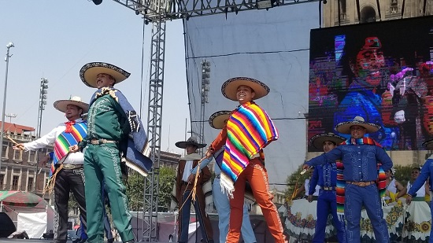

Cómo es la cultura de Guanajuato
👣 1. Como es la gente de Guanajuato La gente de Guanajuato es amable, trabajadora y orgullosa de su tierra y historia
👗 Trajes Típicos de Guanajuato 👩🌾 1.traje tipico el Gareña Galereña: Este es el traje típico de las mujeres, caracterizado por sus colores blanco, rojo y verde, que representan la bandera nacional Traje masculino: Aunque no tiene un nombre específico, está influenciado por la actividad minera de la región y presenta elementos de vestimenta indígena y colonial.
🧥 2. Tradiciones y festividades La gente de Guanajuato mantiene vivas muchas tradiciones religiosas y populares, como las posadas navideñas, el Día de Muertos, la Procesión del Silencio, y festivales regionales con música, bailes típicos y comida tradicional.
💃 3. Artesanía y textiles El estado es conocido por su artesanía en barro, plata y textiles. Los artesanos producen desde joyería hasta tejidos tradicionales como el sarape y el rebozo, símbolos de la cultura local.
🎭 4. Sentido de comunidad y familia La cultura guanajuatense tiene un fuerte sentido de comunidad y tradición familiar, donde las festividades y reuniones son clave para fortalecer los lazos sociales y mantener vivas las costumbres.
🎉 Costumbres y Tradiciones de Guanajuato 🙏 1.Viernes de Dolores Se celebra el último viernes de la Cuaresma antes de Semana Santa en honor a la Virgen de Dolores, patrona de los mineros. Ese día se conmemoran los 7 dolores que vivió la Virgen María durante la pasión y muerte de su hijo Jesucristo.
🐏 2. Apertura de San Juan y Presa de la Olla. Es un evento artístico y cultural que ocurre el primer lunes del mes de julio. La celebración surgió en el siglo XVIII, en 1749 cuando se terminó de construir la Presa de la Olla y que por falta de tuberías ni filtros, tenía que abrir la represa para que el río trajera agua fresca.
💃 3. Danza de Paloteros Es una danza prehispánica cuyo origen no se tiene claro si se debe a los Piñícuaros o a los Purúandiros.
🐏 4. Danza del Torito. Es una danza tradicional representativa de los municipios de Guanajuato, Silao y Romita que nació en 1837 alrededor de una historia aparentemente ocurrida en la Hacienda de Chichimellas.
📿 5. Aniversario del Día de la toma de la Alhóndiga de Granaditas. Es una conmemoración civil celebrada el 28 de septiembre de cada año. Recuerda la hazaña heroica de 1810 en la que el ejército insurgente liderado por el cura Miguel Hidalgo y Castilla se enfrenta a los realistas (españoles) y les arrebata el dominio de Alhóndiga de Granaditas dando inicio la lucha independentista de México.
💃 6.Vestido de la “Galereña”. Fue una indumentaria cotidiana hace unos siglos atrás y hoy día es un traje folclórico que representa a la mujer guanajuatense.
🧵 7. Festival Internacional Cervantino. Este festival se creó en los años 70, producto de la iniciativa de un profesor universitario y de la población, que se determinaron a divulgar la cultura. Así que empezaron a escenificar obras de Miguel de Cervantes en diferentes lugares públicos.
🗣️ 8. Callejón del Beso. Conocida por la historia de don Carlos y doña Ana, una pareja que se encontraba en secreto en los balcones de un estrecho callejón. Desafortunadamente la mujer murió a manos de su padre cuando los vio besándose.